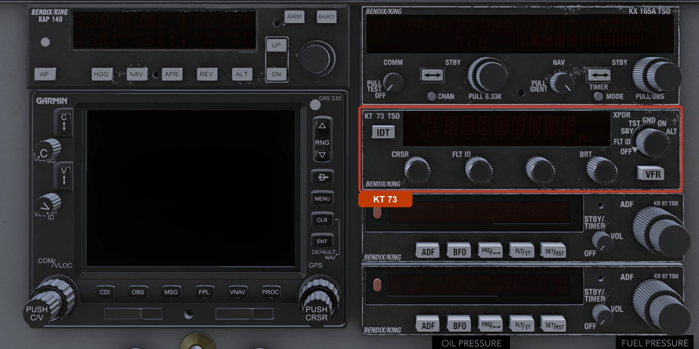

DC-3 Modern Avionics · Operating Guide
KT 73
Bendix/King Mode S Datalink Transponder
Modern Variant Edition
Published by
This guide covers the Bendix/King KT 73 transponder as fitted to the DC-3 Modern variant, a standalone companion to the main DC-3 Aircraft Operating Manual. The KT 73 is the box that answers when ground radar asks "who are you, and how high," and on this aircraft it is a study-level recreation of the real unit: the cursor-based code entry, the eight-character Flight ID, the mode chain, the reply and ident logic, and the power gating are all modeled. This guide walks through setting a squawk, identing, the flight ID, the modes, and what every part of the display means.
A transponder is half of the conversation that lets air traffic control see you as more than a blip. The ground station interrogates, your transponder replies, and your four-digit code and pressure altitude appear next to your target on the controller's scope. Without it you are a primary radar return at best, an anonymous smudge; with it you are a tagged, altitude-reporting aircraft that ATC can sequence and separate.
The KT 73 is a Mode S unit, and that word matters. Mode S ("Select") transponders carry a unique 24-bit address baked into each airframe, so the ground station can address your aircraft individually instead of shouting to everyone in the beam and sorting out the overlapping replies. Mode S also carries a datalink and an eight-character Flight ID that ties your radar return to your callsign or registration. This is the foundation that elementary surveillance is built on, and the same selective-addressing scheme that ADS-B later grew out of. It is exactly the kind of box a DC-3 still earning its keep in modern controlled airspace would carry.
This is the KT 73, the Mode S datalink member of the Silver Crown Plus line. It replaced the earlier KT 76 in this panel, and it is not that older unit: instead of four little octal knobs for the code, the KT 73 uses a cursor you drive across the display, and it adds the Flight ID that a Mode A/C-only transponder never had.

| Parameter | Specification |
|---|---|
| Reply modes | Mode A (code), Mode C (code + altitude), Mode S (selective, datalink) |
| Squawk code | Four octal digits (0–7 each), 4096 possible codes |
| Flight ID | Up to 8 alphanumeric characters |
| Altitude reporting | Pressure altitude, shown as a flight level in ALT mode |
| Ident duration | About 18 seconds |
| Brightness | Manual adjustment (up to 8 carets, default 4) |
The KT 73 is powered from the DC Radio Bus through its own TRANSPONDER circuit breaker. If the display is blank, the usual cause is no avionics power (master off, or the bus is dead) or that breaker being open. The faceplate legends are lit separately, on the radio-panel lighting circuit, so the engraved labels can glow at night even when the unit itself is unpowered.
The KT 73 is a single low box: a display across the top, four knobs along the bottom, the function selector on the right, and two buttons. The display does double duty depending on mode, which is why the four knobs are about moving a cursor and changing what sits under it rather than one knob per digit.
| # | Control | What it is |
|---|---|---|
| 1 | IDT | Ident button. Sends the ident pulse when ATC asks you to "ident." |
| 2 | CRSR | Cursor knob. Moves the cursor across the code digits or the Flight ID characters. |
| 3 | FLT ID | Sets the Flight ID character under the cursor (in FLT ID mode). |
| 4 | DATA | Sets the squawk digit under the cursor (0 through 7). This is the third knob from the left, the one with no legend printed above it. |
| 5 | BRT | Display brightness, adjusted in TST mode. |
| 6 | Function selector | The mode knob on the right: OFF, FLT ID, SBY, TST, GND, ON, ALT. |
| 7 | VFR | Recalls the VFR code with one press; holds to restore the previous code. Pressing it while holding IDT in SBY reprograms the stored VFR code, so take care not to do that by accident. |
The big knob on the right selects what the transponder is doing. Turning it clockwise steps through OFF, FLT ID, SBY, TST, GND, ON, and ALT. Each is covered in The Modes. For normal flight you live in ALT.
The code is set with two knobs working together. CRSR moves a cursor under the four code digits; DATA changes the digit the cursor is sitting on. Because transponder codes are octal, each digit runs 0 through 7 and wraps, so you will never dial an 8 or a 9. Move the cursor to a digit, spin it to the value you want, move to the next, and so on.
In FLT ID mode the cursor moves across the eight Flight ID characters instead of the code digits, and the FLT ID knob cycles the character under the cursor through a blank, the letters A to Z, and the digits 0 to 9. This is how you spell out your callsign or registration.
Brightness is set by hand rather than automatically; there is no ambient-light sensing in this build. Brightness is adjusted in TST mode: turn the function selector to TST, then turn BRT to taste. A row of small carets under the readout shows the level: the number lit is the setting, from none up to eight, and four is the factory default. Pressing IDT while in TST snaps the brightness back to that default.
When a controller says "ident," press IDT. It sends the special position-identification pulse that makes your target bloom on the controller's scope so they can pick you out. The annunciation stays lit for about 18 seconds and then clears itself. Ident works in the replying modes (GND, ON, ALT); in TST it does the brightness-reset job instead.
One press of VFR recalls the VFR conspicuity code (1200 in the United States, 7000 across much of the rest of the world) and puts it straight into the active code, replacing whatever you had. Pressed it by accident? Hold VFR for about two seconds and it puts your previous code back. The VFR code itself is configurable in the DC-3's options, so it matches the region you fly.
The display has two windows and a few annunciations. The right window almost always shows your code; the left window shows your altitude when you are reporting it, and the mode name otherwise.
| Element | Location | Shows |
|---|---|---|
| Altitude window | Left cells | In ALT mode, your flight level (FL followed by hundreds of feet). In other modes, the mode name (SBY, GND, FLT ID) or blank. |
| ID code window | Right cells | The active four-digit squawk code. |
| IDT | Lower left | Lit for about 18 seconds after you press the ident button. |
| FLT | Upper left | Lit while the function selector is in FLT ID and you are editing the aircraft ID. |
| Reply "R" | Far right | On the real unit it flashes each time the transponder answers an interrogation. In this build it blinks steadily whenever the unit is replying rather than tracking real interrogations, so treat it as a sign of life, not as evidence that anyone is looking at you. |
| Cursor | Under the active cell | The edit caret. Marks the code digit or Flight ID character you are changing. |
The altitude the KT 73 reports, and shows in ALT mode, is pressure altitude referenced to the standard 29.92, the same datum every transponder uses so that ATC sees everyone on a common scale. It will not match your baro-corrected altimeter when the local pressure is off standard. That is normal and correct; the controller's computer applies the local correction at their end.
The function selector steps through seven positions. Most flights only ever use SBY on the ground and ALT in the air, but each position has a purpose.
| Mode | Replies? | What it does |
|---|---|---|
| OFF | No | Unit off. |
| FLT ID | No | Displays and edits the eight-character Flight ID. Does not transmit. |
| SBY | No | Standby. Powered and warm, but inhibited from replying. The ground state. |
| TST | No | Self-test. Lights all segments, runs internal checks, then shows -TEST OK. |
| GND | Limited | Ground. Mode S only, suppresses the older replies that would clutter the surface picture. |
| ON | Yes | Replies with your code, but not your altitude. |
| ALT | Yes | Replies with code and altitude. Normal flight. |
No power to the unit. The faceplate legends can still glow at night on the lighting circuit, but the transponder is doing nothing.
A dedicated mode for entering the Flight ID, the callsign or registration that identifies you on a Mode S display. The transponder does not reply while you are in here; set the ID, then turn back to a replying mode. See Squawk Codes and the Flight ID for the procedure.
The transponder is energized and ready but will not answer interrogations. This is where you leave it on the ramp and during taxi at a field that does not want transponders replying on the ground. The code stays visible so you can set it before you need it.
A self-test. The display lights every segment for several seconds so you can confirm nothing is burned out, the unit runs its internal checks, and then shows -TEST OK. The self-test always passes in this aircraft, so you will not see a fault code. TST is also where you adjust display brightness with the BRT knob.
A Mode S nicety for busy airports. On the real unit, GND keeps the transponder answering selective Mode S interrogations and emitting its squitter, so surface-movement radar can see you, while suppressing the older all-call replies that would otherwise clutter the ground picture. Use it while taxiing where it is called for.
GND currently holds the transponder silent rather than replying selectively, so while the face reads GND the aircraft is not visible to traffic systems or to online radar. If you want to be seen while taxiing, use ALT.
The transponder replies with your code but withholds altitude. The altitude window goes blank. You will rarely need this; it exists for the case where altitude reporting is unreliable or specifically not wanted.
The normal in-flight mode. The transponder replies with both your code and your pressure altitude, and the altitude window shows your flight level. Unless told otherwise, this is where the selector belongs in the air.
A transponder code is four octal digits, each 0 to 7, which is why there are 4096 of them and not ten thousand. ATC assigns you one; you set it with CRSR and DATA. A handful are reserved and worth knowing by heart:
| Code | Meaning |
|---|---|
| 1200 | VFR (United States). The default uncontrolled-flight code. |
| 7000 | VFR (much of the rest of the world). |
| 7500 | Unlawful interference (hijack). |
| 7600 | Radio communication failure. |
| 7700 | Emergency. |
Because you dial the code one digit at a time, be deliberate when passing through the 7x00 range. Briefly landing on 7500, 7600, or 7700 while setting an unrelated code can light up a controller's alarm. Set the leftmost digit last when you can, or just be quick about it.
The Flight ID is the eight-character identity Mode S radar shows beside your target: your callsign for an airline or charter flight, or your aircraft registration otherwise. Setting it:
If you fly where the VFR code is not the factory 1200, you can teach the VFR button a new one. Put the selector in SBY, dial the code you want, hold IDT, and tap VFR. From then on the VFR button recalls that code. The VFR code is also exposed in the DC-3's options so you can set it there once for your region.
Every unit in the Modern avionics stack can be opened in its own floating window, which is handy for tuning on a second monitor, working the box in VR, or just getting a closer look without leaning into the panel. In X-Plane's keyboard or joystick settings, find the command named "Toggle KT 73 popup" and bind it to a key or controller button. Press it to open the window; press it again to close it.
Inside the window every control works exactly as it does in the cockpit: click the buttons, and roll the mouse wheel over a knob to turn it. Click the unit's nameplate to dock or undock the window. Docked, it fills the window edge to edge; undocked, it floats as an ordinary window you can drag and resize anywhere on screen, with the bezel letterboxed so the faceplate keeps its proportions.
The KT 73 also appears in the unified Avionics Stack popup, a single window that shows the whole Modern radio stack at once with every screen live and every control working. That stack window and this unit's own popup coexist, and both stay in sync with the panel, so you can run whichever suits your setup. The Avionics Stack is covered in the main DC-3 Aircraft Operating Manual.
A working KT 73 in flight sits in ALT, showing your code on the right and your flight level on the left, with the reply "R" winking away. No dashes in the altitude window, just a steady code.
| Indication | Meaning | What to do |
|---|---|---|
| Display dark | No power: avionics off, the bus is dead, or the TRANSPONDER breaker is open. | Restore avionics power and check the breaker. |
| Dashes in the altitude window | In ALT mode, the altitude is outside the range the display can show. | The code still works; altitude reporting does not until the source is valid. |
| No reply "R" in flight | The selector is in SBY or OFF. The lamp does not indicate radar coverage in this build, so its absence does not mean nobody is interrogating you. | Confirm the selector is in ALT. |
LES DC-3 · KT 73 Transponder Operating Guide · DC-3 Modern Avionics Series
Leading Edge Simulations · Published by X-Aviation